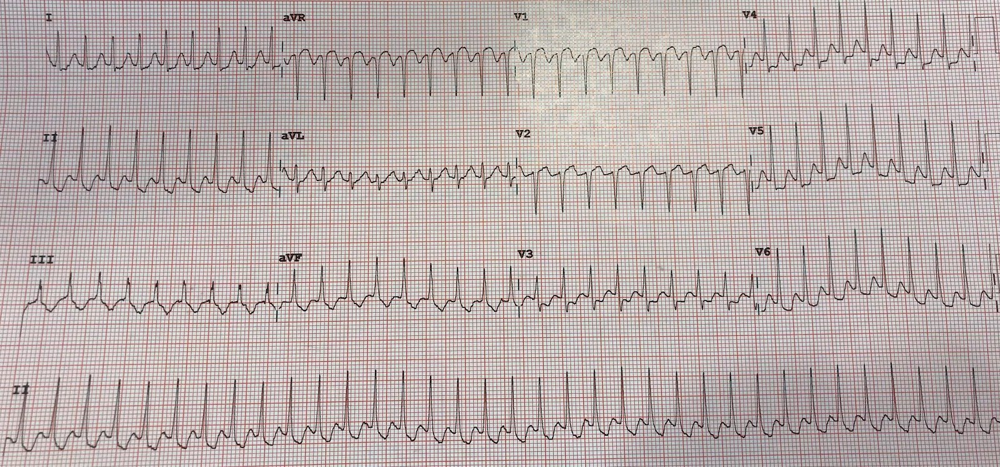
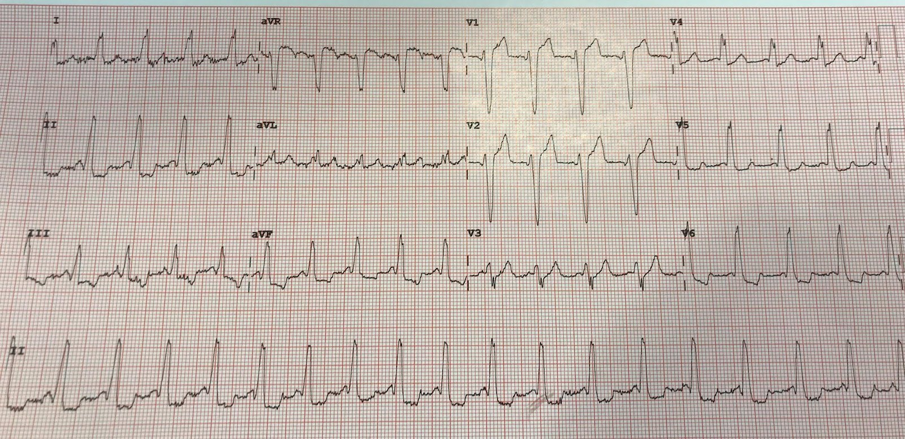
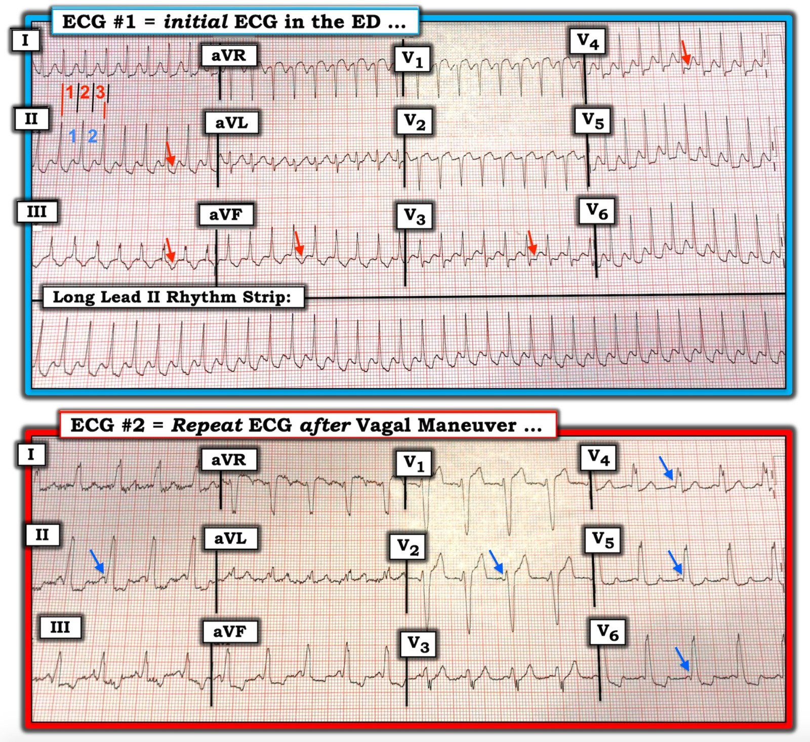

16/10/2019 — Nhịp này có thể là gì? Và điều gì đang diễn ra sau khi nhịp này bị cắt?
Bản dịch tiếng Việt của bài "What could this rhythm be? And what is going on after it breaks?" – Dr. Smith’s ECG Blog. Giữ nguyên toàn bộ 5 hình ảnh của bản gốc.
Tác giả: Pendell Meyers, biên tập: Steve Smith
Một người đàn ông 30 mấy tuổi, không có tiền sử bệnh lý, đến khám vì hồi hộp đánh trống ngực. Các dấu hiệu sinh tồn và khám lâm sàng trong giới hạn bình thường, ngoại trừ tần số tim.
Đây là điện tâm đồ ban đầu của bệnh nhân:


Bản ghi cho thấy một nhịp nhanh QRS hẹp (narrow complex tachycardia) đều, do đó chẩn đoán phân biệt gồm nhịp nhanh xoang, SVT (bao gồm AVNRT thường gặp nhất, kế đến là AVRT [tức SVT trong bối cảnh WPW có đường phụ], rồi đến nhịp nhanh nhĩ, v.v.) hoặc cuồng nhĩ.
Nếu đây là cuồng nhĩ, và vì nhịp đều với tần số 210, thì cuồng nhĩ phải dẫn truyền 1:1 xuống thất. Không có sóng nhĩ nào rõ ràng, mặc dù các sóng lệch âm ở V1 đứng trước các phức bộ QRS có thể có nguồn gốc nhĩ, hoặc toàn bộ đường nền ở chuyển đạo II có thể trông như có hình răng cưa – theo ý kiến của tôi thì điều này không rõ ràng. Cuồng nhĩ 1:1 có vẻ ít khả năng vì, do phải là dẫn truyền 1:1, tần số cuồng nhĩ sẽ phải rất chậm, chỉ 210 lần/phút (bình thường là 300). Tần số thất khoảng 210 lần/phút khiến nhịp nhanh xoang khó xảy ra ở một người 30 tuổi (về lý thuyết tần số xoang tối đa vào khoảng 190 theo quy tắc kinh nghiệm 220 trừ Tuổi).
Ngoài lề: nếu tần số cuồng nhĩ là 300 lần/phút, nút AV sẽ không thể dẫn truyền hết, và tần số thất chỉ có thể là 300 nếu có một đường phụ hoặc một đường tắt (bypass tract) quanh nút AV cắm vào bó His. Trong trường hợp trước, QRS bắt buộc phải rộng (do tiền kích thích tạo nên sóng delta), còn trong trường hợp sau, QRS sẽ hẹp.
Nghiệm pháp cường phế vị REVERT đã được thực hiện, và nhịp thay đổi.
Một điện tâm đồ ghi lại đã được thực hiện:


Lúc này là một nhịp đều với các phức bộ QRS rộng hơn so với trong cơn nhịp nhanh ở trên, gần như bắt chước LBBB. Khoảng PR cực ngắn, đến mức QRS rộng khởi phát ngay từ cuối sóng P. Phần khởi đầu của phức bộ QRS không phải là sóng delta rõ ràng nhất, nhưng nhìn chung hình ảnh này phù hợp với dẫn truyền qua đường phụ, tức WPW.
Xem hai ca tương tự sau:
Một phụ nữ 40 mấy tuổi, không có tiền sử bệnh lý, đến khám vì đau ngực 2 ngày
Bạn nghĩ gì về blốc nhánh trái (Left Bundle Branch Block) này?
Giờ đây khi đã nghi ngờ bệnh nhân có đường phụ, nhịp có nhiều khả năng nhất gây ra cơn nhịp nhanh QRS hẹp đều kịch phát trên điện tâm đồ đầu tiên là AVRT xuôi chiều (orthodromic), trong đó điện thế hoạt động được dẫn xuống qua nút AV (tạo nên phức bộ QRS hẹp) rồi đi ngược lên qua đường phụ, và cứ thế tiếp diễn.
Bệnh nhân được chuyển đến chuyên khoa điện sinh lý để thăm dò điện sinh lý (EP) và có thể triệt đốt.
Những điểm cần học:
Bạn phải suy luận được một cách dễ dàng chẩn đoán phân biệt của các nhịp nhanh dựa trên các nhóm QRS hẹp so với rộng và nhịp đều so với không đều:
– Hẹp & Đều
– Hẹp & Không đều
– Rộng & Đều
– Rộng & Không đều
Sau khi chuyển nhịp một cơn nhịp nhanh QRS hẹp đều, bạn luôn nên ghi điện tâm đồ sau chuyển nhịp để tìm các nguyên nhân nền của cơn nhịp nhanh, thường gặp nhất là hội chứng WPW.
WPW có thể làm biến dạng phức bộ QRS và bắt chước các blốc nhánh hoặc các bất thường dẫn truyền khác, mà không cho thấy sóng delta kinh điển lồng vào một phức bộ QRS hẹp, vốn bình thường. Nguy cơ trong ca này là bỏ sót WPW do hình thái QRS gây khó hiểu.
Một số đường phụ là đường “ẩn”, nghĩa là chúng không dẫn truyền trong nhịp xoang bình thường và do đó không để lại dấu vết nào trên điện tâm đồ nhịp xoang lúc nghỉ.

===================================
BÌNH LUẬN CỦA TÔI, bởi KEN GRAUER, MD (16/10/2019):
===================================
Một ca rất hay để bàn luận do Dr. Meyers & Dr. Smith trình bày! Tôi xin bổ sung các bình luận sau về một số khái niệm chọn lọc trong chẩn đoán và xử trí rối loạn nhịp:
Dùng một Cách tiếp cận hệ thống: Có 6 thông số MẤU CHỐT cần đánh giá khi đối mặt với bất kỳ rối loạn nhịp tim nào. 6 thông số này là:
- #1) Bệnh nhân có ổn định huyết động không? Rõ ràng đây là điều thứ 1 cần đánh giá — vì nếu bệnh nhân không ổn định huyết động do chính rối loạn nhịp — thì có chỉ định sốc điện chuyển nhịp ngay lập tức, bất kể đang xử trí VT hay SVT.
5 Thông số Tiếp theo là những gì cần đánh giá về bản thân rối loạn nhịp. Tôi thấy dễ nhớ nhất các thông số này qua câu nói “Hãy để mắt tới các P, Q và 3 R”:
- Có sóng P không? Và nếu không có sóng P nhận diện được rõ ràng — Có bằng chứng của hoạt động nhĩ, chẳng hạn sóng “rung” hoặc sóng “cuồng” không?
- Phức bộ QRS rộng hay hẹp?
- Tần số (Rate) là bao nhiêu?
- Nhịp có đều (Regular) không?
- Nếu có sóng P — Chúng có “liên quan” (Related) tới các phức bộ QRS lân cận không?
- BẤM VÀO ĐÂY — nếu bạn muốn tìm hiểu thêm về việc sử dụng Cách tiếp cận “Ps, Qs & 3Rs”.


Đánh giá 6 thông số trong Ca bệnh này:
Để cho rõ — tôi đã đặt 2 bản ghi của ca này cạnh nhau trong Hình 1. Dù các bản ghi này bị chụp nghiêng đôi chút — các số đo vẫn được bảo toàn.
- Về 6 Thông số: Bệnh nhân trong ca này có triệu chứng “hồi hộp đánh trống ngực” — nhưng người đàn ông 30 mấy tuổi này ổn định huyết động, với các dấu hiệu sinh tồn bình thường ngoài tần số tim nhanh.
- Sóng P xoang bình thường (tức là sóng P dương ở chuyển đạo II) không được nhìn thấy. Có thể có hoạt động ngược dòng 1:1 (mũi tên ĐỎ trong điện tâm đồ #1) — nhưng nếu các sóng lệch nhọn hơn dự kiến này thực sự phản ánh hoạt động nhĩ ngược dòng — thì khoảng RP’ sẽ tương đối dài (nằm hẳn bên trong đoạn ST). Khoảng RP’ nằm hẳn bên trong đoạn ST là quá dài để phù hợp với AVNRT — nhưng có thể phù hợp với AVRT xuôi chiều (vì dẫn truyền ngược dòng qua một đường phụ nằm xa hơn sẽ mất nhiều thời gian hơn, do đường phụ nằm bên ngoài nút AV).
- Phức bộ QRS hẹp (tức là rõ ràng không dài quá nửa ô lớn ở bất kỳ chuyển đạo nào trong 12 chuyển đạo của điện tâm đồ #1).
- 3 chữ R: Nhịp thất cực kỳ đều (Regular) — tần số (Rate) là ~210/phút — và mặc dù không có sóng P xoang, sóng P có thể “liên quan” (Related) tới các phức bộ QRS lân cận qua dẫn truyền ngược dòng 1:1 = dẫn truyền VA.
KẾT LUẬN: Bệnh nhân ổn định huyết động. Nhịp trên điện tâm đồ #1 là một SVT (SupraVentricular Tachycardia – nhịp nhanh trên thất) đều với tần số ~210/phút mà không có dấu hiệu rõ ràng của sóng P xoang. Như đã nói, có thể có dẫn truyền nhĩ ngược dòng 1:1 — nhưng khó chắc chắn điều này từ điện tâm đồ #1. Theo Dr. Meyers — các chẩn đoán phân biệt chính của một SVT đều không có dấu hiệu rõ ràng của sóng P xoang bao gồm: i) Nhịp nhanh xoang; ii) SVT vào lại (hoặc AVNRT nếu vòng vào lại nằm gọn trong đường dẫn truyền bình thường của nút AV — hoặc AVRT nếu có sự tham gia của một đường phụ); iii) Nhịp nhanh nhĩ; hoặc iv) Cuồng nhĩ.
LƯU Ý: Đáng để dành một chút thời gian bàn về cách chúng tôi xác định tần số tim — vì ước tính chính xác tần số đôi khi cực kỳ hữu ích trong việc xác định xem cân nhắc chẩn đoán nào ở trên là nguyên nhân có khả năng nhất của một nhịp SVT đều.
- Khi nhịp nhanh và đều — phương pháp Cách-Một-Nhát cho phép ước tính tần số nhanh và chính xác. Hãy tìm một phức bộ QRS bắt đầu trên một đường kẻ đậm. Chúng tôi chọn nhát thứ 2 ở chuyển đạo I (Xem đường dọc MÀU ĐỎ thứ 1 dưới nhát này ở chuyển đạo I của điện tâm đồ #1).
- Khoảng thời gian (tức là, khoảng R-R) cần để ghi 2 nhát (các số MÀU XANH ở chuyển đạo II) chỉ hơi dưới 3 ô lớn (các số MÀU ĐỎ ở chuyển đạo I). Vì vậy — MỘT NỬA tần số thì hơi nhanh hơn 300/3 ~105/phút.
- Do đó tần số thực của nhịp trong điện tâm đồ #1 là ~105 X 2 = 210/phút.
- BẤM VÀO ĐÂY — nếu bạn quan tâm đến video ôn tập ngắn về phương pháp Cách-Một-Nhát này.
Cách tần số tim hỗ trợ chẩn đoán SVT:
- Mặc dù công thức ước tính tần số tối đa của nhịp nhanh xoang trong nghiệm pháp gắng sức (tức là, trong lúc gắng sức) là ~ 220 trừ Tuổi — theo kinh nghiệm của tôi, rất khó (dù không phải là không thể) để nhịp nhanh xoang ở một bệnh nhân “nằm ngang” trưởng thành (tức là, ở bệnh nhân bạn đang khám, người không vừa mới chạy) lại vượt quá 170/phút. Nhận định này không đúng với trẻ em — vì nhịp nhanh xoang trên 200/phút không phải là hiếm gặp ở lứa tuổi nhi. Nhưng tần số 210/phút ở bệnh nhân trong ca này về cơ bản đã loại trừ nhịp nhanh xoang.
- Đáp ứng thất thường gặp nhất của cuồng nhĩ (AFlutter) không được điều trị là ~150/phút (khoảng thường gặp ~140-160/phút). Đó là vì tần số nhĩ trong AFlutter không được điều trị thường là ~300/phút (khoảng thường gặp 250-350/phút) — và vì AFlutter không được điều trị thường biểu hiện với dẫn truyền AV 2:1 — 300/2 ~150/phút. Vì vậy (theo Dr. Meyers) — SVT trong ca này với tần số ~210/phút rất khó là AFlutter ở người đàn ông 30 mấy tuổi trước đây khỏe mạnh này, vì điều đó đòi hỏi tần số cuồng nhĩ là 210 X 2 = 420/phút, nhanh hơn nhiều so với tần số nhĩ của cuồng nhĩ. LƯU Ý: Khoảng tần số này là của cuồng nhĩ (AFlutter) không được điều trị. Những bệnh nhân đã dùng thuốc chống loạn nhịp có thể biểu hiện với tần số nhĩ (và do đó cả tần số thất) của cuồng nhĩ chậm hơn.
- Cuối cùng — Mặc dù đã được liệt kê trong chẩn đoán phân biệt ở trên — ATach là nguyên nhân ít gặp hơn nhiều của một SVT đều tuyệt đối như thấy trong điện tâm đồ #1 so với AVNRT hoặc AVRT, đặc biệt ở một người trưởng thành trẻ tuổi trước đây khỏe mạnh.
- VÌ VẬY — Bằng phương pháp loại trừ, nguyên nhân nhiều khả năng nhất của SVT đều ở ~210/phút trong điện tâm đồ #1 là một nhịp nhanh vào lại. Và, nếu các mũi tên MÀU ĐỎ mà chúng tôi vẽ trong điện tâm đồ #1 thực sự đại diện cho hoạt động nhĩ ngược dòng với khoảng RP’ dài — thì nhiều khả năng bệnh nhân này có WPW (BẤM VÀO ĐÂY — để ôn tập các rối loạn nhịp thường gặp trong WPW).
- ĐIỂM THEN CHỐT (PEARL): Từ những điều trên, có thể thấy rằng nếu SVT đều có tần số gần với 150/phút (tức là, 140-160/phút) — thì bất kỳ thực thể nào trong 4 chẩn đoán liệt kê ở trên cũng có thể hiện diện (nhịp nhanh xoang/AVNRT-AVRT/ATach/AFlutter). Chính khi tần số của một SVT đều không có dấu hiệu rõ ràng của sóng P xoang nhanh hơn mức này một cách đáng kể — thì SVT vào lại (AVNRT/AVRT) mới trở thành chẩn đoán có khả năng cao nhất, vượt xa các chẩn đoán khác!
DIỄN TIẾN: Theo Dr. Meyers — điện tâm đồ #2 được ghi sau nghiệm pháp cường phế vị. Tôi đã vẽ các mũi tên MÀU XANH để làm nổi bật những chuyển đạo nhìn thấy sóng delta — điều này xác nhận chẩn đoán WPW.
Có nên triệt đốt cho bệnh nhân này?
Bệnh nhân trong ca này là một người đàn ông 30 mấy tuổi trước đây khỏe mạnh, đến khám vì “hồi hộp đánh trống ngực”. Không có đề cập đến các cơn SVT trước đây. Không có đề cập đến điều trị bằng thuốc — chỉ biết rằng nghiệm pháp cường phế vị REVERT đã được thực hiện và thành công. Chuyển bệnh nhân đến bác sĩ điện sinh lý (EP) để triệt đốt có phải là hướng điều trị tối ưu cho bệnh nhân này không? Theo ý kiến của tôi — câu trả lời không phải là có — mà đúng hơn là, “Còn tùy” …
- Rõ ràng cách tiếp cận điều trị nhiều rối loạn nhịp tim đã thay đổi trong những năm gần đây, cùng với trình độ chuyên môn ngày càng cao trong lĩnh vực điện sinh lý tim đầy hấp dẫn. Nhưng ngay cả ở những trung tâm tốt nhất với các bác sĩ tim mạch điện sinh lý (EP) giàu kinh nghiệm nhất — triệt đốt VẪN LÀ một thủ thuật, và VẪN CÓ khả năng xảy ra tác dụng bất lợi.
- Nếu tôi là một người đàn ông 30 tuổi trước đây khỏe mạnh, bị cơn SVT thứ 1 dung nạp được về huyết động và được cắt dễ dàng bằng nghiệm pháp cường phế vị đơn giản (thậm chí không cần dùng thuốc chống loạn nhịp) — tôi sẽ không chọn một thủ thuật xâm lấn có khả năng gây tác dụng phụ đáng kể làm can thiệp thứ 1 của mình (mặc dù khả năng “chữa khỏi” rối loạn nhịp này là RẤT cao với nguy cơ tác dụng bất lợi rất thấp). “Nguy cơ thấp” không giống với “KHÔNG có nguy cơ” — và nếu tôi là bệnh nhân, tôi sẽ muốn bắt đầu bằng một can thiệp ít xâm lấn hơn nhiều.
- Nói như vậy — không có câu trả lời Có-hoặc-Không cho câu hỏi này. Tôi chỉ đơn giản gợi ý rằng thay vì tự động chuyển bệnh nhân này đến bác sĩ tim mạch điện sinh lý để triệt đốt đường phụ vào thời điểm này — một hướng xử trí thay thế phù hợp có thể là theo dõi chặt chẽ đồng thời hướng dẫn bệnh nhân các nghiệm pháp cường phế vị mà anh ấy có thể tự thực hiện tại nhà (tức là, Valsalva), có thể kèm một “hỗn hợp” thuốc chống loạn nhịp dùng khi cần (prn) (tức là, một liều duy nhất thuốc chẹn beta hoặc diltiazem hoặc verapamil) để thử dùng nếu SVT ổn định huyết động này tái phát. Cơn SVT này có thể hiếm khi tái phát (nếu nó có tái phát), và có thể lại được xử trí dễ dàng — thậm chí có thể không cần điều trị chống loạn nhịp hằng ngày.
- LƯU Ý: Tất nhiên việc khoa cấp cứu (ED) chuyển bệnh nhân này đi để được chăm sóc theo dõi LÀ có chỉ định! — nhưng việc theo dõi đó không nhất thiết phải là với bác sĩ tim mạch điện sinh lý (hay thậm chí không nhất thiết phải là bác sĩ tim mạch). Tất nhiên — NẾU các cơn tái diễn nhiều lần mặc dù đã dùng thuốc chống loạn nhịp phù hợp — thì đó sẽ là chuyện khác (trong trường hợp đó, chuyển đến bác sĩ tim mạch điện sinh lý thân thiện của bạn trở thành cách xử trí tối ưu). Trên con đường hướng tới việc ra quyết định tối ưu cho ca này — sự đồng ý sau khi được thông tin đầy đủ của bệnh nhân và mong muốn của bệnh nhân là yếu tố then chốt.
- BẤM VÀO ĐÂY — để biết thêm về “Quan điểm của tôi” về Cách tư vấn cho bệnh nhân bị WPW.
Chúng tôi xin CẢM ƠN Dr. Meyers và Dr. Smith đã trình bày ca bệnh này!